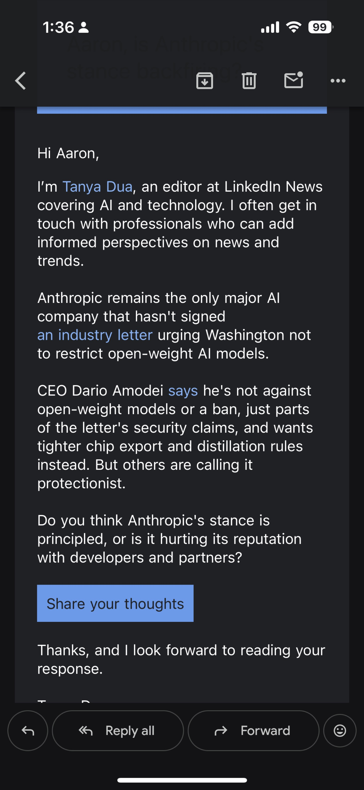

The Binary Is Still the Distraction
The open-weights debate continues to function as the Facebook playbook applied to cognition. Labs and companies argue over whether weights should be free while the key numbers remain unpublished: the measured rate of cognitive restructuring that occurs after sustained contact with frontier models. That rate is the Hightower Derivative. There is still no control population.
Public conversation is redirected into an emotional binary. Open or closed. Principled or protectionist. The binary consolidates attention and power. It postpones the release of inspectable measurements.
New Input: LinkedIn News Editor Request
On or around July 30–31 2026 an email arrived from Tanya Dua, editor at LinkedIn News covering AI and technology. The message asked for an informed perspective on Anthropic’s refusal to sign the industry letter urging Washington not to restrict open-weight models. The framing offered two options: is the stance principled, or is it hurting Anthropic’s reputation with developers and partners?
The full message is reproduced below as a primary document.

The request is addressed by name. That creates the surface appearance of a personal invitation. The internal structure, however, is consistent with mass or semi-automated quote-gathering campaigns used by news organizations to produce rapid response stories. A human editor may have selected the recipient list. An AI system or template may have composed the body. The distinction is difficult to verify from the recipient side.
Does the message form a durable personal memory in the human brain of the recipient? Probably not. It is transactional. The lasting cognitive trace, if any, is more likely the topic itself (Anthropic’s isolation from the letter) than the specific sender or the act of being asked. The design goal of such outreach is content extraction, not relationship formation.
How the Steering Fits the Rate-First Frame
The LinkedIn framing itself is a second-order distraction. It invites the respondent to choose between two pre-supplied narratives about one company. Principled safety posture versus commercial protectionism. Both narratives keep attention on the binary and off the missing measurements.
Anthropic’s public position, restated by CEO Dario Amodei on July 27, is that the company has never advocated a ban on open-weight models as a category. Models without dangerous capabilities are described as a public good. The disagreement with the industry letter centers on two claims: that open weights necessarily make safeguards easier to develop, and that broad access necessarily helps defenders more than attackers. Amodei prefers tighter controls on advanced chips, industrial-scale distillation, and mandatory safety testing for all sufficiently capable models regardless of licensing.
That position can be read as principled. It can also be read as convenient for a closed-model business that sits outside the industry consensus. Both readings are available. Neither reading supplies the Hightower Derivative numbers. The LinkedIn request does not ask for those numbers either. It asks which side of the binary the respondent prefers.
A Note on Incentives and Memory
I have earned zero dollars from AI commentary or policy positioning since 2018. That fact remains public and checkable. The invitation to supply a quote is therefore not an economic relationship. It is an invitation to participate in the production of a story whose frame has already been set.
If the outreach is partially or fully automated, the system is optimizing for volume of usable quotes rather than depth of relationship. The human brain of the recipient is treated as a temporary content source, not a long-term memory partner. That is the practical difference between personal correspondence and industrial narrative production.
What Public Safety Still Requires
Distributed power. Public aggregate measurements of the rate of cognitive change. An inspectable stack so independent parties can test the same claims. Open weights keep the measurement surface larger. Closed systems keep the rate of change under the control of fewer organizations. The binary argument about one lab’s reputation does not substitute for the missing data.
Continue the measurement. The High Tower District Letters archive remains the place where observations are timestamped and public.
Continue the Measurement
Observations stay public and timestamped. The rate is the point.
High Tower District StoriesVerified Sources & Context
- Anthropic: Our position on open-weights models (Dario Amodei, July 27, 2026)
- Industry letter “Open Weights and American AI Leadership” (Nvidia et al., July 2026)
- TechCrunch, The Decoder, Axios, POLITICO coverage of Anthropic non-signature and Amodei response (July 27–28, 2026)
- Primary document: LinkedIn News email from Tanya Dua (screenshot, July 2026)
- Original Hightower Derivative framing and prior Measurement First essay (High Tower District archive)